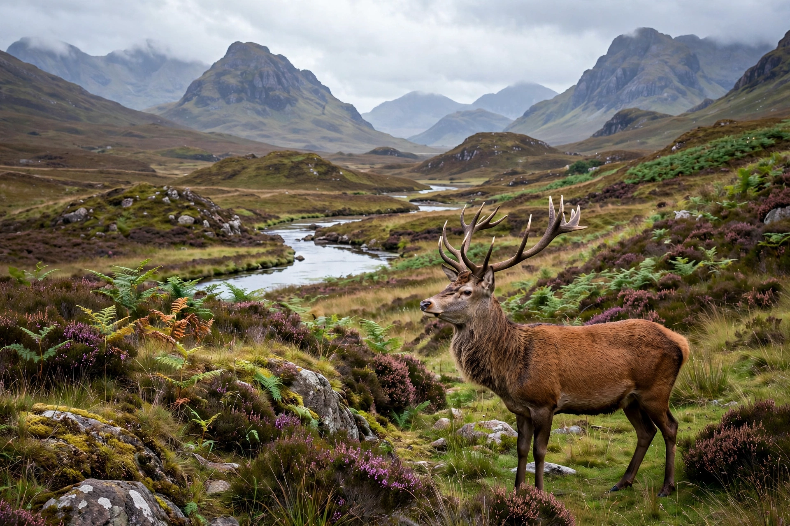

From Wikipedia, the free encyclopedia
| Formed | 1992 (as Scottish Natural Heritage) |
|---|---|
| Jurisdiction | Scotland |
| Headquarters | Inverness |
| Parent | Scottish Government (Environment and Forestry Directorate) |

NatureScot (Scottish Gaelic: Bùidheann Nàdair na h-Alba) is the statutory public body responsible for Scotland's natural heritage, advising the Scottish Government and managing much of the country's nature conservation. It was established in 1992 as Scottish Natural Heritage (SNH) and rebranded as NatureScot in 2020.
NatureScot designates and oversees protected areas including Sites of Special Scientific Interest (SSSIs), National Nature Reserves (NNRs), and the Scottish component of the Natura 2000 network. It advises on planning and development, issues licenses for protected species, manages species reintroduction and control programs, and promotes public enjoyment of the outdoors under the Scottish Outdoor Access Code.
The body was formed by merging the Nature Conservancy Council for Scotland with the Countryside Commission for Scotland under the Natural Heritage (Scotland) Act 1991. Its headquarters are in Inverness, with offices across Scotland. Notable programs include the beaver reintroduction trial at Knapdale and management of invasive non-native species.